I have been using Rust-Oleum rattle can primer for the early parts of the build. It gets the job done but I have not been fully satisfied. It feels a bit muddy and the bonding with aluminum leaves something to be desired.
Mathieu at EAA Chapter 20, who is building his own RV-9, mentioned that he etches the aluminum before priming. He scrubs the surface with red Scotch-Brite using EkoEtch, then applies more EkoEtch as he works so it does not dry out on larger parts. Finally he rinses it with water and lets it dry for about an hour before priming. As per him, this significantly improves how well the primer bonds to the aluminum. That got me thinking more seriously about the whole priming process.
The Constraint: Non-Toxic
An important condition for me is that whatever primer I use must not be toxic. I am working in my garage in a closed residential space. I cannot be spraying solvent-based paints and breathing fumes, and I do not want to be that neighbor either. This ruled out most of the traditional epoxy primers used in aircraft building.
After some reading, Stewart Systems EkoPoxy kept coming up. It is a water-based epoxy primer, non-toxic and easy to clean up, and well regarded in the homebuilder community. The water-based formulation is an added benefit for working in a residential garage.
Getting Advice and Getting Started
I talked with Thomas, the technical counselor at EAA Chapter 20, and he suggested getting a smaller quantity first and experimenting before committing to it for the full build. Good advice. So I ordered a small quantity of the EkoPoxy primer along with the EkoEtch.
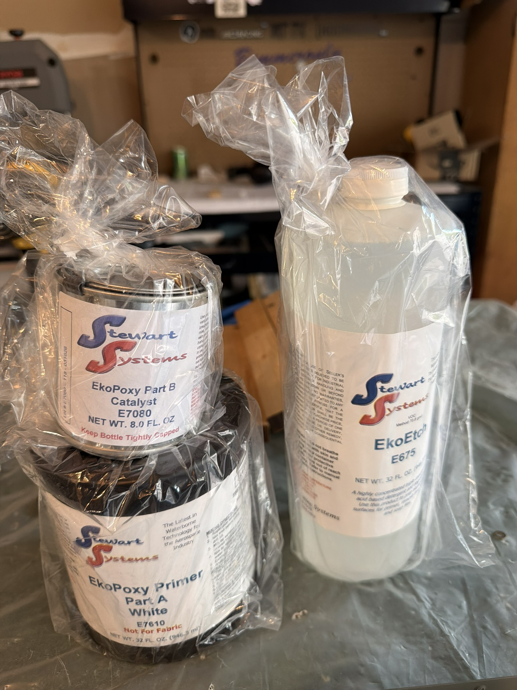
Stewart Systems EkoPoxy primer and EkoEtch, ready to experiment.
First Application
Today I went to San Carlos Airport and, with the help of Thomas and Mathieu, tried it out on a scrap part from the laser-cut parts pile.
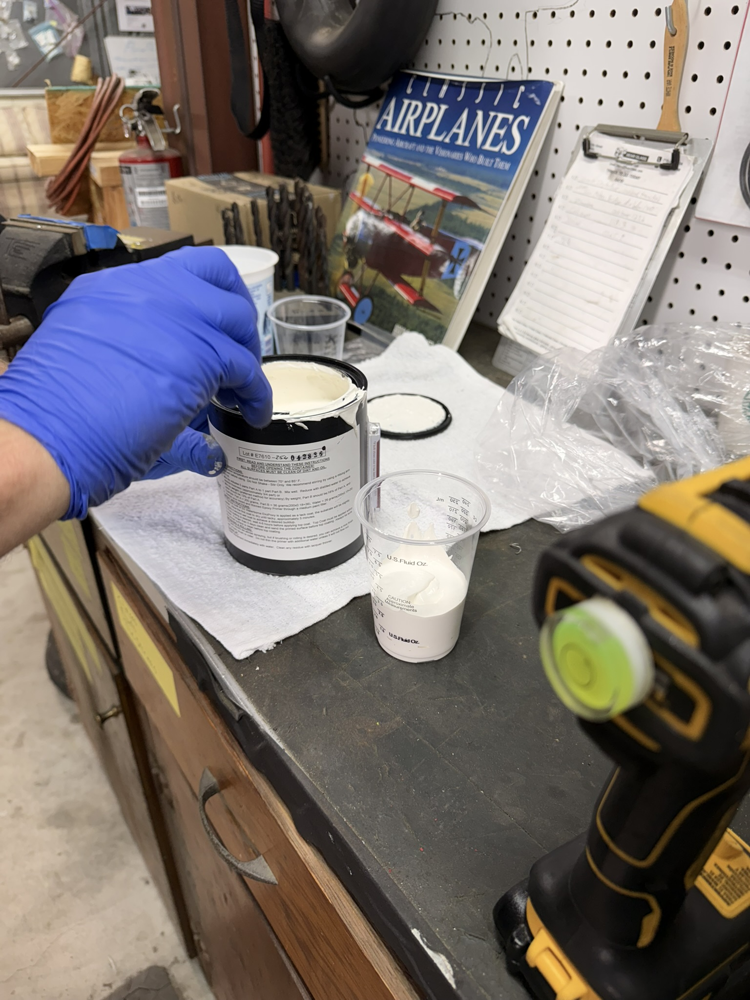
Mixing the EkoPoxy two-part primer before application.
▶ Watch: Scuffing aluminum with red Scotch-Brite and EkoEtch (YouTube Short)
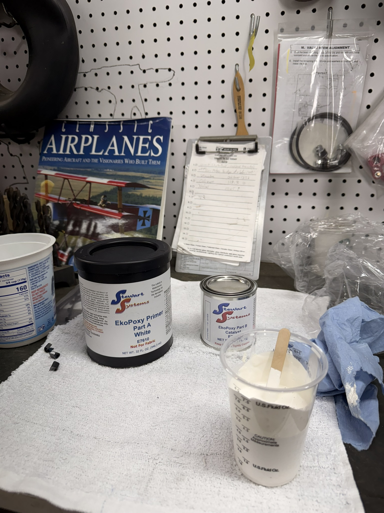
EkoPoxy mixed and ready in the cup before spraying.
The Paint Gun Problem
The gun we were using was a Harbor Freight HVLP, rated at around 6 CFM. Stewart Systems recommends a gun rated at 9 CFM HVLP or higher for proper atomization. That explains some of the inconsistency in the application.
I have ordered the 3M Accuspray Paint Spray Gun, which exceeds the 9 CFM requirement and is known for being easy to work with and clean, which is important for a water-based product.
The other piece of the puzzle is the air compressor. The Accuspray has a healthy appetite for air, so I will need a larger compressor to feed it. The plan is to have two compressors: the ultra-quiet one I currently use for everything else in the shop, and a larger one reserved for priming on weekends. The weekend-only schedule is deliberate. I need to be mindful of the neighbors.
Memorial Day 2026: First Real Priming Session
Carl, a fellow EAA Chapter 20 member who is about to start building his own RV-10, came over on Saturday afternoon. He has around 600 hours of flight time across several continents, with a particular interest in long-distance international flying. Good company for a day in the garage.
We set up the 3M Accuspray gun and got to work. The results were not good. Carl and I kept running into what looked like orange peel texture in the finish. We had set the pressure to 20 PSI as the instructions said, but when we opened the trigger the gauge dropped to zero. After a long session of fiddling we ended the day with poor results and not much to show for it.
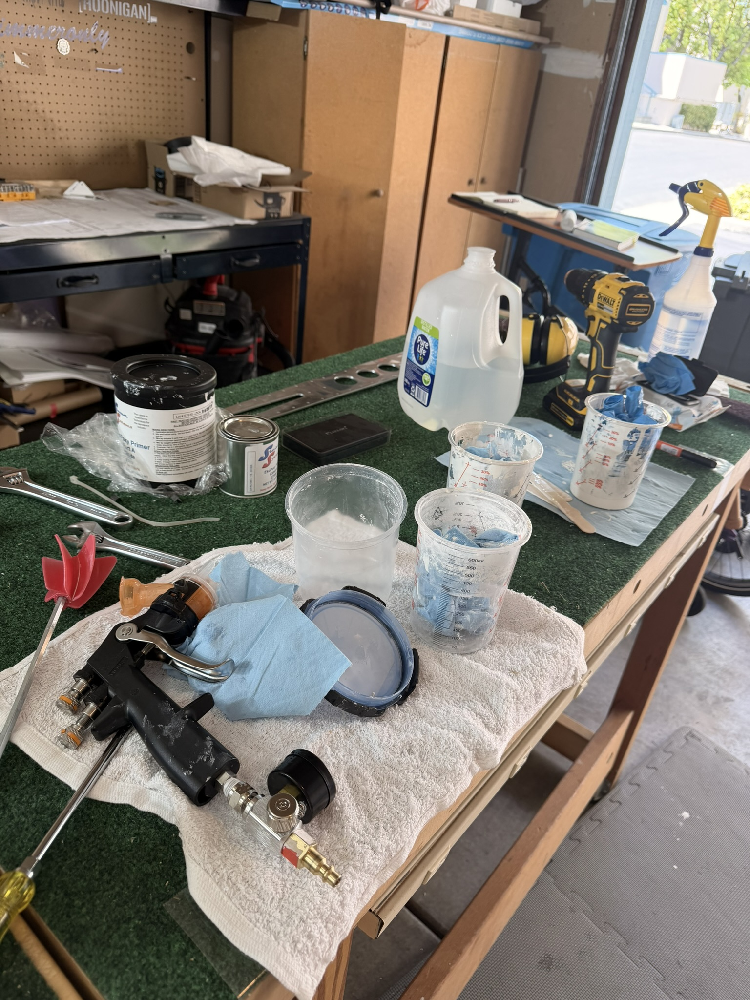
The workbench setup for the priming session.
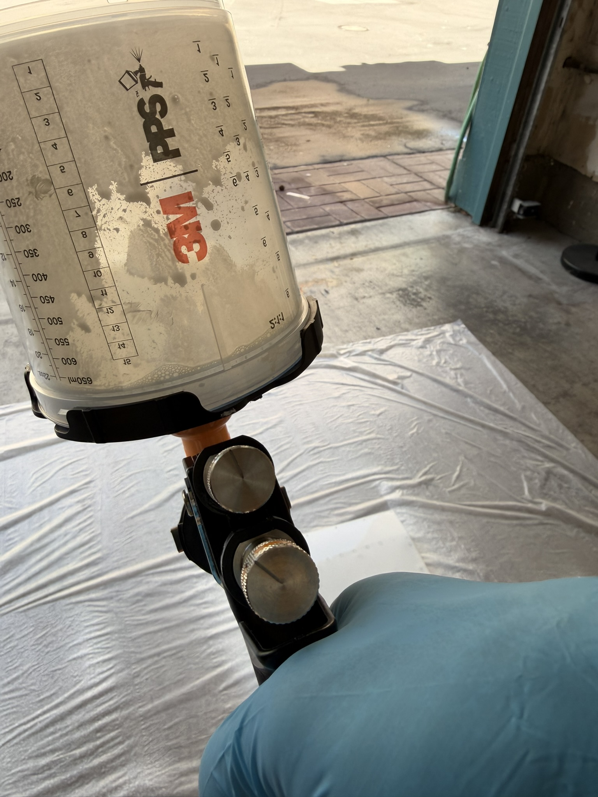
The 3M Accuspray gun. The pressure problem was not obvious at first.
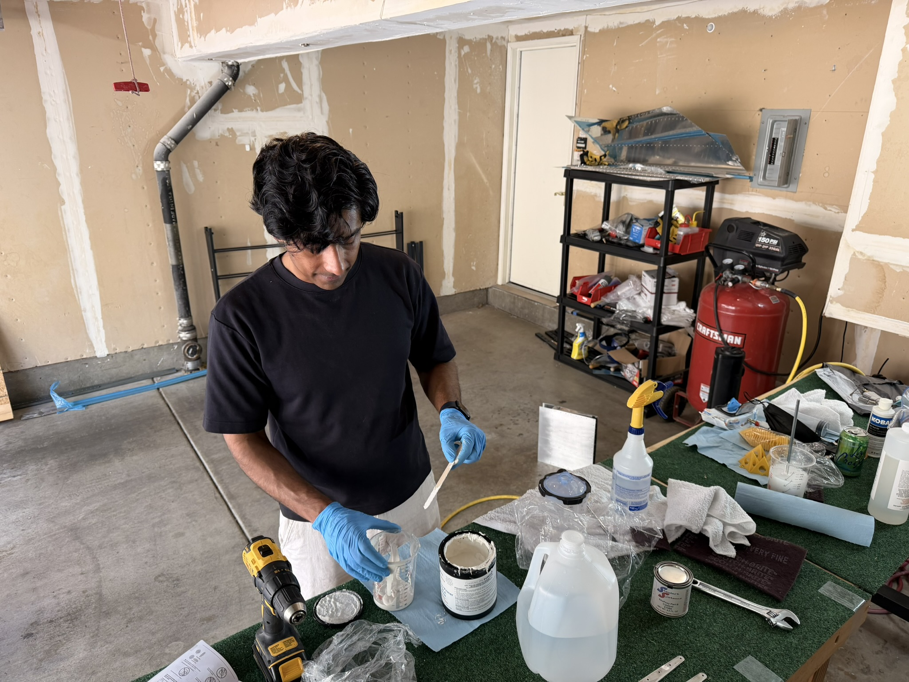
Mixing EkoPoxy: Part A, Part B, and water.
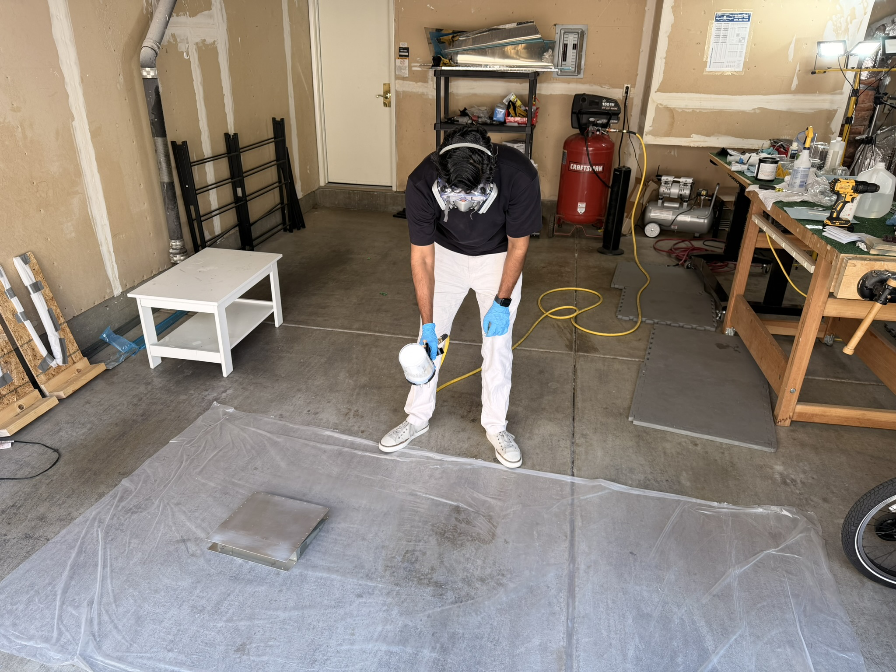
Testing the settings on a sacrificial part before committing to the real parts.
The Pressure Problem
Carl did some research that evening and found the answer. Pressure drops as air flows through the hose from the compressor to the gun. The instruction to set 20 PSI means 20 PSI at the gun with the trigger fully open, not 20 PSI at the compressor. We had been measuring at the wrong point.
The next morning I cranked the compressor up to 83 PSI. When I opened the trigger all the way, the gauge at the gun read 20 PSI. That was the setting we needed.
Second Attempt: Good Results
With the pressure sorted, I prepped the parts properly. I etched everything with EkoEtch first and let it dry for an hour. In the meantime I mixed the EkoPoxy, Part A and Part B with water per the instructions.
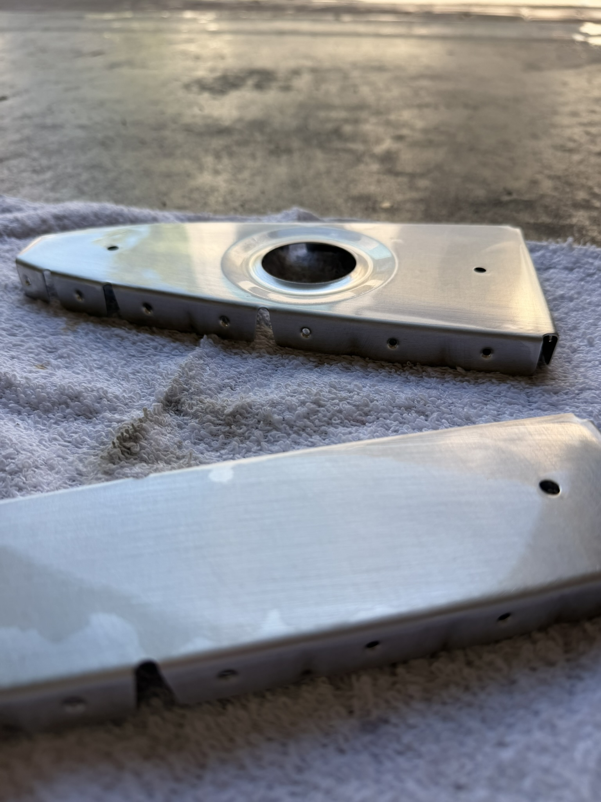
Parts etched with EkoEtch and drying before priming.
The two ribs I primed came out very well compared to the first attempt. The next day I finished the remaining parts.
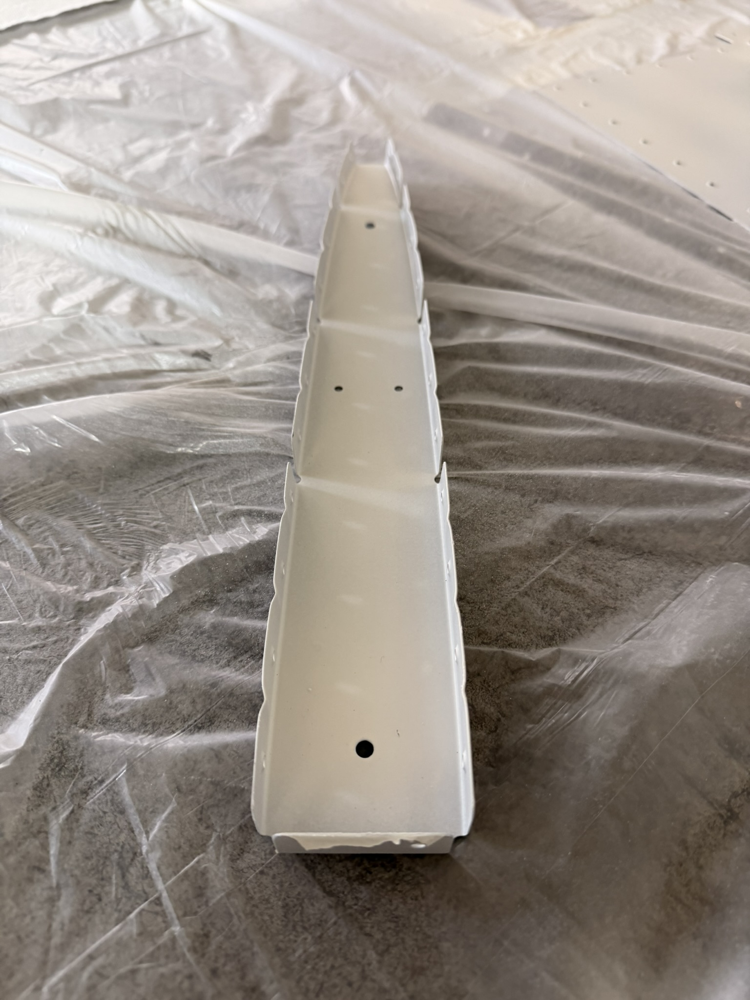
A rib primed with EkoPoxy. Much better than the first attempt.
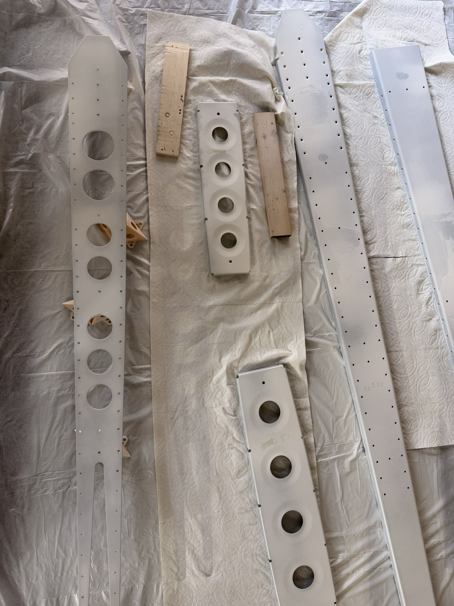
Vertical stabilizer parts primed.
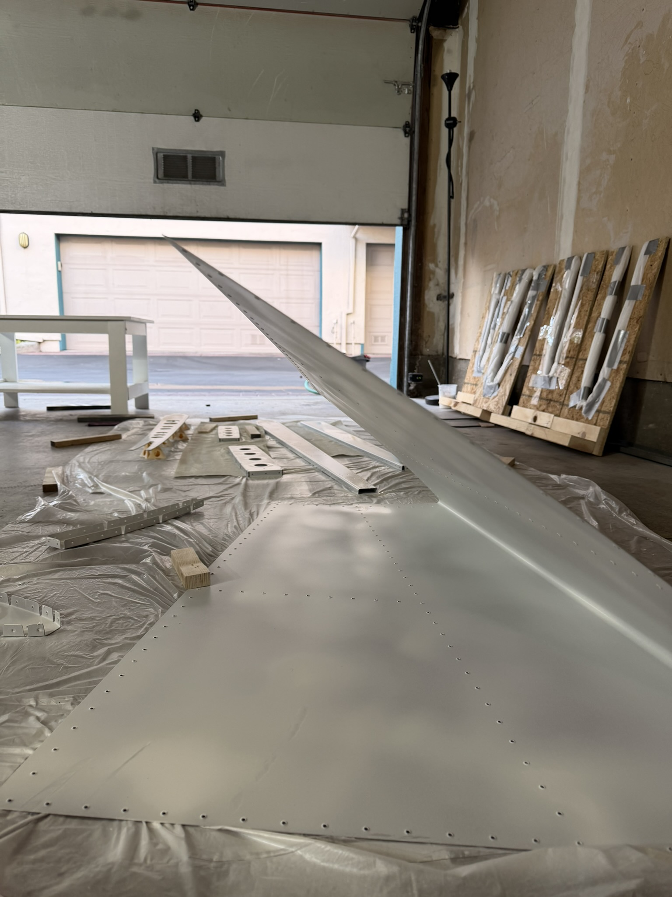
Vertical stabilizer skin primed.
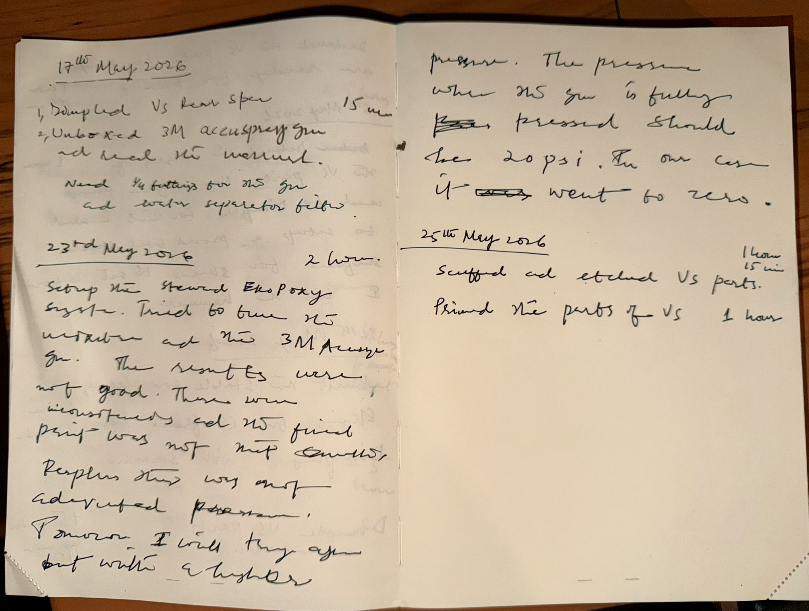
Logbook entry for the session.